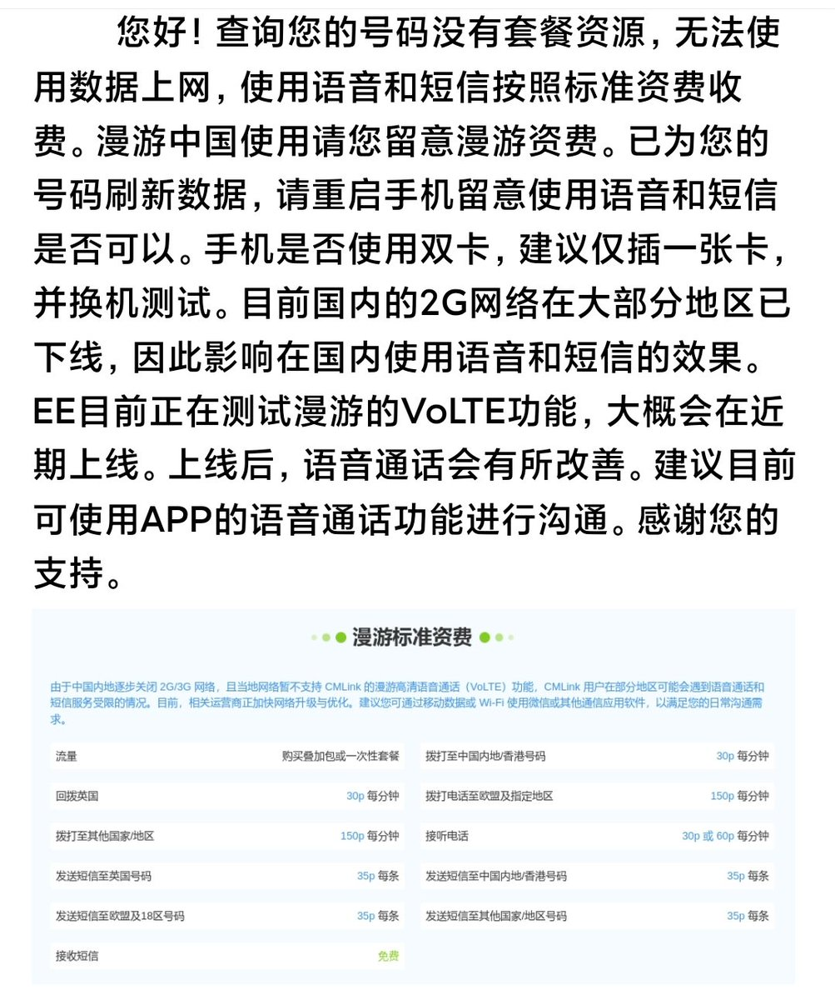
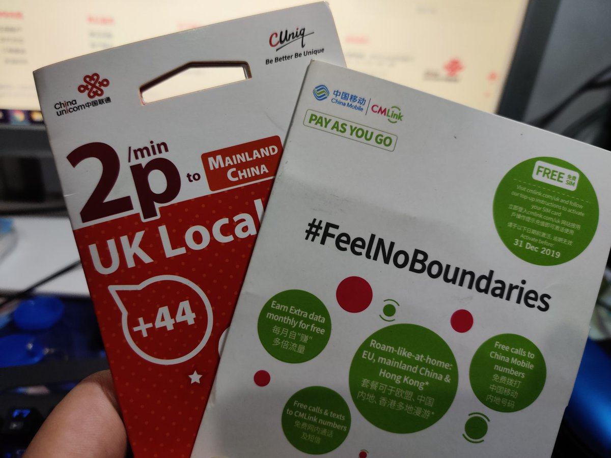
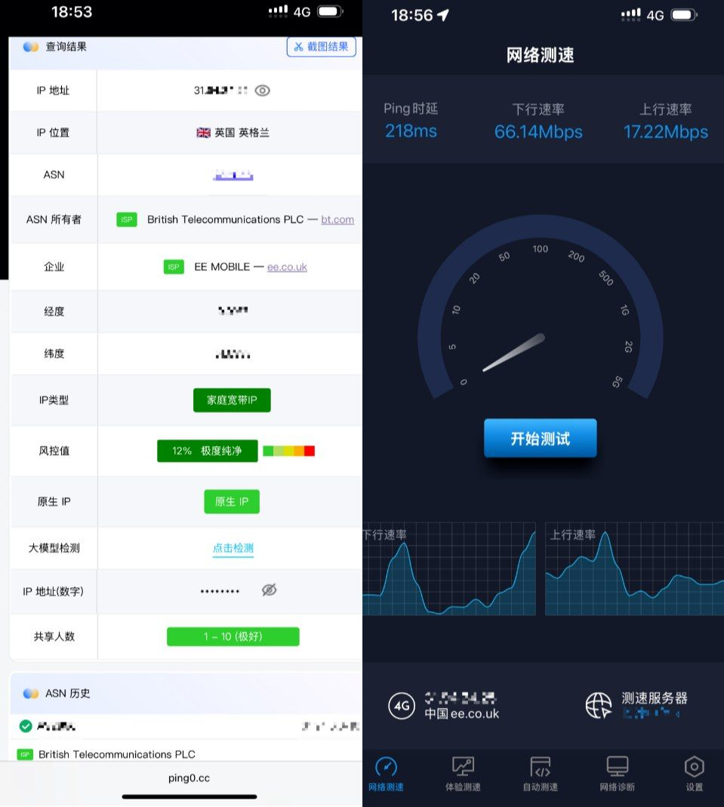

CMLink UK纯废卡，连VoLTE漫游都没有，现在15镑保号年包只有英国1GB流量，cmuk也是抽象🤣
另外在英国/欧盟和中国使用的话需要有套餐才能正常使用流量，而在其他地方漫游才是payg。
目前国内的2G网络在大部分地区已下线，因此影响在国内使用语音和短信的效果。
EE目前正在测试漫游的VoLTE功能，大概会在近期上线。上线时间不知道，总之跟纯流量卡没什么区别。

另外在英国/欧盟和中国使用的话需要有套餐才能正常使用流量，而在其他地方漫游才是payg。
目前国内的2G网络在大部分地区已下线，因此影响在国内使用语音和短信的效果。
EE目前正在测试漫游的VoLTE功能，大概会在近期上线。上线时间不知道，总之跟纯流量卡没什么区别。



上期聊到CUniq，其实还是蛮感叹的。其实三大运营商都有布局英国市场，CUniq夭折、CMLink持续、CTExcel最近整活，他们仨都是EE（BT，英国电信）的虚拟运营商（MVNO） https://t.co/qL0iGYwIxw https://t.co/YdwuLLeury